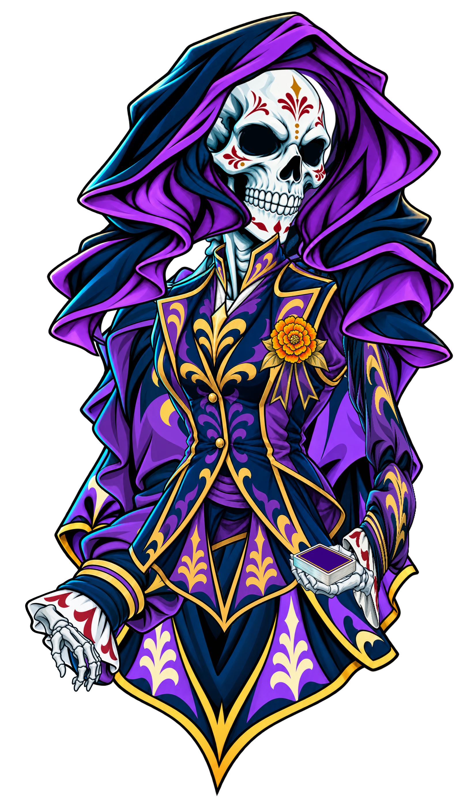

Посадка воротника исправлена: открытый V вокруг шеи, ближний рукав перед краем жилета. Сравнение до / после · Pivots на мастере · Повороты BASE · Повороты FS.
 BASE · тёплый свет сверху слева · 1634×2800
BASE · тёплый свет сверху слева · 1634×2800
FS · холодный свет и cyan rim · одна геометрияПроверка сборки и поз
Загрузка деталей…
При чистой смене кистей кости и IK остаются в setup. Повороты суставов проверяются отдельным контролом. JSON предназначен для Import Data в Spine 3.8.75. Проверка в официальном runtime 3.8 выполнена отдельно; импорт в вашем редакторе здесь не сертифицирован. Инструкция и пределы проверки.
Кисти P2-fix — исходная дорисовка
Все экспортированные смены кистей имеют холст 330×400. Указательный жест хранится вертикально, чтобы целый палец поместился на холсте; поворот attachment возвращает его вправо. Пустое место холста сохраняет регистрацию, а не увеличивает видимый размер кисти.
Экспортированные детали · BASE